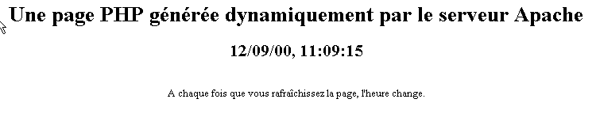
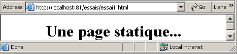
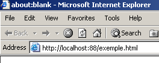
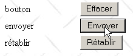

2. Conceptos básicos
En este capítulo, presentamos los fundamentos de la programación web. Su objetivo principal es dar a conocer los principios básicos de la programación web antes de ponerlos en práctica con un lenguaje y un entorno concretos. Presenta numerosos ejemplos que se recomienda probar para «empaparse» poco a poco de la filosofía del desarrollo web.
2.1. Los componentes de una aplicación web
 |
Número | Función | Ejemplos habituales |
OS Servidor | Linux, Windows | |
Servidor web | Apache (Linux, Windows) IIS (NT), PWS(Win9x) | |
Scripts ejecutados en el lado del servidor. Pueden ser ejecutados por módulos del servidor o por programas externos al servidor (CGI). | PERL (Apache, IIS, PWS) VBSCRIPT (IIS, PWS) JAVASCRIPT (IIS, PWS) PHP (Apache, IIS, PWS) JAVA (Apache, IIS, PWS) C#, VB.NET (IIS) | |
Base de datos: esta puede estar en la misma máquina que el programa que la utiliza o en otra a través de Internet. | Oracle (Linux, Windows) MySQL (Linux, Windows) Access (Windows) SQL Server (Windows) | |
OS Cliente | Linux, Windows | |
Navegador web | Netscape, Internet Explorer | |
Scripts ejecutados en el lado del cliente dentro del navegador. Estos scripts no tienen acceso a los discos del equipo cliente. | VBscript (IE) Javascript (IE, Netscape) Perlscript (IE) Applets JAVA |
2.2. Intercambio de datos en una aplicación web con formulario
 |
Número | Función |
El navegador solicita un URL por primera vez (http://máquina/url). No se ha pasado ningún parámetro. | |
El servidor web le envía la página web de este URL. Esta puede ser estática o generada dinámicamente por un script de servidor (SA) que puede haber utilizado el contenido de bases de datos (SB, SC). En este caso, el script detectará que se ha solicitado URL sin pasar parámetros y generará la página inicial WEB. El navegador recibe la página y la muestra (CA). Los scripts del lado del navegador (CB) han podido modificar la página inicial enviada por el servidor. A continuación, mediante interacciones entre el usuario (CD) y los scripts (CB), la página web se modificará. En particular, se rellenarán los formularios. | |
El usuario valida los datos del formulario, que deben enviarse al servidor web. El navegador vuelve a solicitar el URL inicial u otro, según el caso, y transmite al mismo tiempo al servidor los valores del formulario. Para ello, puede utilizar dos métodos denominados GET y POST. Al recibir la solicitud del cliente, el servidor activa el script (SA) asociado a la URL solicitada, script que detectará los parámetros y los procesará. | |
El servidor entrega la página WEB generada por el programa (SA, SB, SC). Este paso es idéntico al paso 2 anterior. A partir de ahora, los intercambios se realizan según los pasos 2 y 3. |
2.3. Algunos recursos
A continuación se incluye una lista de recursos que permiten instalar y utilizar ciertas herramientas para el desarrollo web. En el anexo se encuentra una guía de instalación de estas herramientas.
- Apache, Instalación y puesta en marcha, O'Reilly | |
- Programación en Perl, Larry Wall, O'Reilly - Aplicaciones CGI en Perl, Neuss y Vromans, O'Reilly - La documentación HTML incluida con Active Perl | |
- Programación web con PHP, Lacroix, Eyrolles - Manual de usuario de PHP disponible en la página web de PHP | |
- Interfaz entre WEB y la base de datos en WinNT, Alex Homer, Eyrolles | |
- JAVA Servlets, Jason Hunter, O'Reilly - Programación de redes con Java, Elliotte Rusty Harold, O'Reilly - JDBC y Java, George Reese, O'Reilly | |
- El manual de MySQL está disponible en la página web de MySQL - Oracle 8i en Linux, Gilles Briard, Eyrolles - Oracle 8i en NT, Gilles Briard, Eyrolles |
2.4. Notaciones
A partir de ahora, daremos por hecho que se han instalado una serie de herramientas y adoptaremos las notaciones siguientes:
notación | significado |
raíz del árbol de directorios del servidor Apache | |
raíz de las páginas web servidas por Apache. Las páginas web deben encontrarse en esta raíz. Así, URL http://localhost/page1.htm corresponde al archivo <apache-DocumentRoot>\page1.htm. | |
raíz del árbol de directorios vinculado al alias cgi-bin y donde se pueden colocar scripts CGI para Apache. Así, el URL http://localhost/cgi-bin/test1.pl corresponde al archivo <apache-cgi-bin>\test1.pl. | |
raíz de las páginas web generadas por PWS. Es en esta raíz donde deben encontrarse las páginas web. Así, URL http://localhost/page1.htm corresponde al archivo <pws-DocumentRoot>\page1.htm. | |
raíz del árbol de Perl. El ejecutable perl.exe se encuentra normalmente en <perl>\bin. | |
Raíz del árbol de directorios del lenguaje PHP. El ejecutable php.exe suele encontrarse en <php>. | |
Raíz del árbol de Java. Los ejecutables relacionados con Java se encuentran en <java>\bin. | |
raíz del servidor Tomcat. Se pueden encontrar ejemplos de servlets en <tomcat>\webapps\examples\servlets y ejemplos de páginas JSP en <tomcat>\webapps\examples\jsp |
Para cada una de estas herramientas, consulte el anexo, donde encontrará ayuda para su instalación.
2.5. Páginas web estáticas, páginas web dinámicas
Una página estática está representada por un archivo HTML. Una página dinámica, por su parte, es generada «sobre la marcha» por el servidor web. En este apartado le proponemos diversas pruebas con diferentes servidores web y diferentes lenguajes de programación para mostrar la universalidad del concepto web.
2.5.1. Página estática HTML (lenguaje de marcado HyperText)
Consideremos el siguiente código HTML:
<html>
<head>
<title>essai 1 : une page statique</title>
</head>
<body>
<center>
<h1>Une page statique...</h1>
</body>
</html>
que genera la siguiente página web:
Las pruebas

test1
- iniciar el servidor Apache
- colocar el script prueba1.html en <apache-DocumentRoot>
- visualizar el archivo URL http://localhost/essai1.html con un navegador
- detener el servidor Apache
prueba2
- Iniciar el servidor PWS
- colocar el script prueba1.html en <pws-DocumentRoot>
- visualizar el URL http://localhost/prueba1.html con un navegador
2.5.2. Una página ASP (Active Server Pages)
El script essai2.asp:
<html>
<head>
<title>essai 1 : une page asp</title>
</head>
<body>
<center>
<h1>Une page asp générée dynamiquement par le serveur PWS</h1>
<h2>Il est <% =time %></h2>
<br>
A chaque fois que vous rafraîchissez la page, l'heure change.
</body>
</html>
genera la siguiente página web:

La prueba
- Iniciar el servidor PWS
- colocar el script essai2.asp en <pws-DocumentRoot>
- solicitar URL http://localhost/essai2.asp con un navegador
2.5.3. Un script PERL (Practical Extracting and Reporting Language)
El script essai3.pl:
#!d:\perl\bin\perl.exe
($secondes,$minutes,$heure)=localtime(time);
print <<HTML
Content-type: text/html
<html>
<head>
<title>essai 1 : un script Perl</title>
</head>
<body>
<center>
<h1>Une page générée dynamiquement par un script Perl</h1>
<h2>Il est $heure:$minutes:$secondes</h2>
<br>
A chaque fois que vous rafraîchissez la page, l'heure change.
</body>
</html>
HTML
;
La primera línea es la ruta del ejecutable perl.exe. Hay que adaptarla si es necesario. Una vez ejecutado por un servidor web, el script genera la siguiente página:

La prueba
- servidor web: Apache
- A modo informativo, consulte el archivo de configuración srm.conf o httpd.conf según el version de Apache en <apache>\confs y busque la línea que hace referencia a cgi-bin para conocer el directorio <apache-cgi-bin> en el que colocar essai3.pl.
- Colocar el script essai3.pl en <apache-cgi-bin>
- Solicite el url http://localhost/cgi-bin/essai3.pl
Cabe señalar que se tarda más tiempo en obtener la página Perl que la página ASP. Esto se debe a que el script Perl se ejecuta mediante un intérprete de Perl que hay que cargar antes de que pueda ejecutar el script. No permanece permanentemente en la memoria.
2.5.4. Un script PHP (Página personal Home, Procesador HyperText)
El script essai4.php
<html>
<head>
<title>essai 4 : une page php</title>
</head>
<body>
<center>
<h1>Une page PHP générée dynamiquement</h1>
<h2>
<?
$maintenant=time();
echo date("j/m/y, h:i:s",$maintenant);
?>
</h2>
<br>
A chaque fois que vous rafraîchissez la page, l'heure change.
</body>
</html>
El script anterior genera la siguiente página web:
Las pruebas


-
consulte el archivo de configuración srm.conf o httpd.conf de Apache en <Apache>\confs
-
A título informativo, compruebe las líneas de configuración de php
test1
-
Inicie el servidor Apache
-
Colocar essai4.php en <apache-DocumentRoot>
-
solicitar el URL http://localhost/essai4.php
prueba2
-
Iniciar el servidor PWS
-
A título informativo, comprueba la configuración de PWS en relación con php
-
colocar prueba4.php en <pws-DocumentRoot>\php
-
solicitar el URL http://localhost/essai4.php
2.5.5. Un script JSP (Java Server Pages)
El script heure.jsp
<% //programa Java que muestra la hora %>
<%@ page import="java.util.*" %>
<%
// código JAVA para calcular la hora
Calendar calendrier=Calendar.getInstance();
int heures=calendrier.get(Calendar.HOUR_OF_DAY);
int minutes=calendrier.get(Calendar.MINUTE);
int secondes=calendrier.get(Calendar.SECOND);
// las horas, los minutos y los segundos son variables globales
// que se podrán utilizar en el código HTML
%>
<% // código HTML %>
<html>
<head>
<title>Page JSP affichant l'heure</title>
</head>
<body>
<center>
<h1>Une page JSP générée dynamiquement</h1>
<h2>Il est <%=heures%>:<%=minutes%>:<%=secondes%></h2>
<br>
<h3>A chaque fois que vous rechargez la page, l'heure change</h3>
</body>
</html>
Una vez ejecutado por el servidor web, este script genera la siguiente página:

Las pruebas
- colocar el script heure.jsp en <tomcat>\jakarta-tomcat\webapps\examples\jsp (Tomcat 3.x) o en <tomcat>\webapps\examples\jsp (Tomcat 4.x)
- Inicie el servidor Tomcat
- Solicite el URL http://localhost:8080/examples/jsp/heure.jsp
2.5.6. Conclusión
Los ejemplos anteriores han demostrado que:
- una página HTML puede generarse dinámicamente mediante un programa. En eso consiste la programación web.
- que los lenguajes y servidores web utilizados pueden ser diversos. Actualmente se observan las siguientes tendencias principales:
- los tándems Apache/PHP (Windows, Linux) y IIS/PHP (Windows)
- la tecnología ASP.NET en plataformas Windows que combinan el servidor IIS con un lenguaje .NET (C#, VB.NET, ...)
- la tecnología de servlets Java y páginas JSP que funcionan con diferentes servidores (Tomcat, Apache, IIS) y en diferentes plataformas (Windows, Linux). Es esta última tecnología la que se desarrollará más detalladamente en este documento.
2.6. Scripts del lado del navegador
Una página HTML puede contener scripts que serán ejecutados por el navegador. Existen numerosos lenguajes de script del lado del navegador. A continuación se enumeran algunos de ellos:
Lenguaje | Navegadores compatibles |
Vbscript | IE |
Javascript | IE, Netscape |
PerlScript | IE |
Java | IE, Netscape |
Veamos algunos ejemplos.
2.6.1. Una página web con un script Vbscript, en el navegador
La página vbs1.html
<html>
<head>
<title>essai : une page web avec un script vb</title>
<script language="vbscript">
function reagir
alert "Vous avez cliqué sur le bouton OK"
end function
</script>
</head>
<body>
<center>
<h1>Une page Web avec un script VB</h1>
<table>
<tr>
<td>Cliquez sur le bouton</td>
<td><input type="button" value="OK" name="cmdOK" onclick="reagir"></td>
</tr>
</table>
</body>
</html>
La página HTML anterior no contiene simplemente el código HTML, sino también un programa destinado a ser ejecutado por el navegador que haya cargado esta página. El código es el siguiente:
<script language="vbscript">
function reagir
alert "Vous avez cliqué sur le bouton OK"
end function
</script>
Las etiquetas <script></script> sirven para delimitar los scripts en la página HTML. Estos scripts pueden estar escritos en diferentes lenguajes y es el atributo language de la etiqueta <script> el que indica el lenguaje utilizado. En este caso es VBScript. No entraremos en detalles sobre este lenguaje. El script anterior define una función llamada «réagir» que muestra un mensaje. ¿Cuándo se llama a esta función? La siguiente línea de código HTML nos lo indica:
El atributo onclick indica el nombre de la función que se debe llamar cuando el usuario haga clic en el botón OK. Cuando el navegador haya cargado esta página y el usuario haga clic en el botón OK, obtendremos la siguiente página:

Las pruebas
Solo el navegador IE es capaz de ejecutar scripts VBScript. Netscape necesita complementos de software para hacerlo. Se pueden realizar las siguientes pruebas:
prueba1
- servidor Apache
- script vbs1.html en <apache-DocumentRoot>
- Acceder a url http://localhost/vbs1.html con el navegador IE
test2
- servidor PWS
- script vbs1.html en <pws-DocumentRoot>
- solicitar el url http://localhost/vbs1.html con el navegador IE
2.6.2. Una página web con un script Javascript, en el navegador
La página: js1.html
<html>
<head>
<title>essai 4 : une page web avec un script Javascript</title>
<script language="javascript">
function reagir(){
alert ("Vous avez cliqué sur le bouton OK");
}
</script>
</head>
<body>
<center>
<h1>Une page Web avec un script Javascript</h1>
<table>
<tr>
<td>Cliquez sur le bouton</td>
<td><input type="button" value="OK" name="cmdOK" onclick="reagir()"></td>
</tr>
</table>
</body>
</html>
Aquí tenemos algo idéntico a la página anterior, salvo que hemos sustituido el lenguaje VBScript por el lenguaje Javascript. Este último tiene la ventaja de que es aceptado por los dos navegadores IE y Netscape. Su ejecución da los mismos resultados:

Las pruebas
prueba1
- servidor Apache
- script js1.html en <apache-DocumentRoot>
- solicitar el url http://localhost/js1.html con el navegador IE o Netscape
test2
- servidor PWS
- script js1.html en <pws-DocumentRoot>
- solicitar el url http://localhost/js1.html con el navegador IE o Netscape
2.7. Los intercambios cliente-servidor
Volvamos a nuestro esquema inicial que ilustraba los actores de una aplicación web:
 |
Aquí nos centramos en los intercambios entre el equipo cliente y el equipo servidor. Estos se realizan a través de una red y conviene recordar la estructura general de los intercambios entre dos equipos remotos.
2.7.1. El modelo OSI
El modelo de red abierta denominado OSI (Open Systems Interconnection Reference Model), definido por la ISO (Organización Internacional de Normalización), describe una red ideal en la que la comunicación entre máquinas puede representarse mediante un modelo de siete capas:
 |
Cada capa recibe servicios de la capa inferior y ofrece los suyos a la capa superior. Supongamos que dos aplicaciones situadas en máquinas A y B diferentes quieren comunicarse: lo hacen a nivel de la capa de aplicación. No necesitan conocer todos los detalles del funcionamiento de la red: cada aplicación entrega la información que desea transmitir a la capa inferior: la capa de presentación. Por lo tanto, la aplicación solo tiene que conocer las reglas de interfaz con la capa de presentación. Una vez que la información se encuentra en la capa de presentación, se pasa, según otras reglas, a la capa de sesión y así sucesivamente, hasta que la información llega al soporte físico y se transmite físicamente a la máquina de destino. Allí, se someterá al proceso inverso al que se sometió en la máquina remitente.
En cada capa, el proceso emisor encargado de enviar la información la envía a un proceso receptor en la otra máquina que pertenece a la misma capa que él. Lo hace siguiendo ciertas reglas que se denominan protocolo de la capa. Por lo tanto, tenemos el siguiente esquema de comunicación final:
 |
La función de las diferentes capas es la siguiente:
Garantiza la transmisión de bits a través de un medio físico. En esta capa se encuentran equipos terminales de procesamiento de datos (E.T.T.D.), como terminales u ordenadores, así como equipos de terminación de circuitos de datos (E.T.C.D.), como moduladores/demoduladores, multiplexores y concentradores. Los puntos de interés en este nivel son: . la elección de la codificación de la información (analógica o digital) . la elección del modo de transmisión (sincrónico o asincrónico). | |
Oculta las características físicas de la capa física. Detecta y corrige los errores de transmisión. | |
Gestiona la ruta que debe seguir la información enviada por la red. A esto se le llama enrutamiento: determinar la ruta que debe seguir la información para llegar a su destinatario. | |
Permite la comunicación entre dos aplicaciones, mientras que las capas anteriores solo permitían la comunicación entre máquinas. Un servicio que ofrece esta capa puede ser la multiplexación: la capa de transporte podrá utilizar una misma conexión de red (de máquina a máquina) para transmitir información perteneciente a varias aplicaciones. | |
En esta capa se encuentran servicios que permiten a una aplicación abrir y mantener una sesión de trabajo en una máquina remota. | |
Su objetivo es uniformizar la representación de los datos en las diferentes máquinas. Así, los datos procedentes de una máquina A serán «maquetados» por la capa de presentación de la máquina A, según un formato estándar, antes de ser enviados a la red. Una vez llegados a la capa de Presentación de la máquina destinataria B, que los reconocerá gracias a su formato estándar, se adaptarán de otra forma para que la aplicación de la máquina B los reconozca. | |
En este nivel se encuentran las aplicaciones que suelen estar más cerca del usuario, como el correo electrónico o la transferencia de archivos. |
2.7.2. El modelo TCP/IP
El modelo OSI es un modelo ideal. El conjunto de protocolos TCP/IP se aproxima a él de la siguiente forma:
 |
- la interfaz de red (la tarjeta de red del ordenador) se encarga de las funciones de las capas 1 y 2 del modelo OSI
- la capa IP (Protocolo de Internet) desempeña las funciones de la capa 3 (red)
- la capa TCP (Protocolo de control de transferencia) o UDP (Protocolo de datagramas de usuario) desempeña las funciones de la capa 4 (transporte). El protocolo TCP se asegura de que los paquetes de datos intercambiados por los equipos lleguen correctamente a su destino. Si no es así, devuelve los paquetes que se han extraviado. El protocolo UDP no realiza esta tarea, por lo que es el desarrollador de aplicaciones quien debe encargarse de ello. Por eso, en Internet, que no es una red 100 % fiable, el protocolo TCP es el más utilizado. Se habla entonces de red TCP-IP.
- La capa de aplicación abarca las funciones de los niveles 5 a 7 del modelo OSI.
Las aplicaciones web se encuentran en la capa de aplicación y, por lo tanto, se basan en los protocolos TCP-IP. Las capas de aplicación de los equipos cliente y servidor intercambian mensajes que se confían a las capas 1 a 4 del modelo para que sean encaminados a su destino. Para entenderse, las capas de aplicación de ambas máquinas deben «hablar» un mismo lenguaje o protocolo. El de las aplicaciones web se llama HTTP (HyperText Transfer Protocol). Se trata de un protocolo de tipo texto, c.a.d, por el que las máquinas intercambian líneas de texto a través de la red para entenderse. Estos intercambios están estandarizados, c.a.d, de modo que el cliente dispone de una serie de mensajes para indicar exactamente lo que quiere al servidor y este último también dispone de una serie de mensajes para dar su respuesta al cliente. Este intercambio de mensajes tiene la siguiente forma:
 |
Cliente --> Servidor
Cuando el cliente realiza su solicitud al servidor web, envía
- líneas de texto en formato HTTP para indicar lo que quiere
- una línea en blanco
- opcionalmente, un documento
Servidor --> Cliente
Cuando el servidor responde al cliente, envía
- líneas de texto en formato HTTP para indicar lo que envía
- una línea en blanco
- opcionalmente un documento
Por lo tanto, los intercambios tienen la misma forma en ambos sentidos. En ambos casos, puede enviarse un documento, aunque es poco habitual que un cliente envíe un documento al servidor. Pero el protocolo HTTP lo prevé. Esto es lo que permite, por ejemplo, a los abonados de un proveedor de acceso descargar diversos documentos en su sitio web personal alojado en dicho proveedor. Los documentos intercambiados pueden ser de cualquier tipo. Tomemos como ejemplo un navegador que solicita una página web que contiene imágenes:
- el navegador se conecta al servidor web y solicita la página que desea. Los recursos solicitados se designan de forma única mediante URL (Uniform Resource Locator). El navegador solo envía encabezados HTTP y ningún documento.
- El servidor le responde. En primer lugar, envía encabezados HTTP que indican qué tipo de respuesta envía. Puede tratarse de un error si la página solicitada no existe. Si la página existe, el servidor indicará en los encabezados HTTP de su respuesta que, tras estos, enviará un documento HTML (HyperText Markup Language). Este documento es una secuencia de líneas de texto en formato HTML. Un texto HTML contiene etiquetas (marcadores) que dan al navegador indicaciones sobre cómo mostrar el texto.
- El cliente sabe, a partir de los encabezados HTTP del servidor, que va a recibir un documento HTML. Lo analizará y quizá se dé cuenta de que contiene referencias a imágenes. Estas no se encuentran en el documento HTML. Por lo tanto, realiza una nueva solicitud al mismo servidor web para pedir la primera imagen que necesita. Esta solicitud es idéntica a la realizada en el paso 1, salvo que el recurso solicitado es diferente. El servidor procesará esta solicitud enviando al cliente la imagen solicitada. En esta ocasión, en su respuesta, los encabezados HTTP especificarán que el documento enviado es una imagen y no un documento HTML.
- El cliente recupera la imagen enviada. Los pasos 3 y 4 se repetirán hasta que el cliente (un navegador, por lo general) tenga todos los documentos que le permitan mostrar la página completa.
2.7.3. El protocolo HTTP
Descubramos el protocolo HTTP con algunos ejemplos. ¿Qué se intercambian un navegador y un servidor web?
2.7.3.1. La respuesta de un servidor HTTP
Aquí veremos cómo responde un servidor web a las solicitudes de sus clients. El servicio web o servicio HTTP es un servicio TCP-IP que suele funcionar en el puerto 80. Podría funcionar en otro puerto. En ese caso, el navegador cliente se vería obligado a especificar ese puerto en la solicitud URL que realiza. Una solicitud URL tiene la siguiente forma general:
con
protocolo | http para el servicio web. Un navegador también puede actuar como cliente de servicios ftp, news, telnet, etc. |
máquina | nombre de la máquina en la que se ejecuta el servicio web |
puerto | puerto del servicio web. Si es el 80, se puede omitir el número de puerto. Este es el caso más frecuente |
ruta | ruta que designa el recurso solicitado |
información | información adicional proporcionada al servidor para precisar la solicitud del cliente |
¿Qué hace un navegador cuando un usuario solicita la carga de un URL?
- abre una comunicación TCP-IP con la máquina y el puerto indicados en la parte machine[:port] del URL. Abrir una comunicación TCP-IP significa crear un «canal» de comunicación entre dos máquinas. Una vez creado este canal, toda la información intercambiada entre las dos máquinas pasará por él. La creación de este canal TCP-IP aún no implica el protocolo web HTTP.
- Una vez creado el canal TCP-IP, el cliente realizará su solicitud al servidor web enviándole líneas de texto (comandos) en formato HTTP. Enviará al servidor la parte de ruta/información del URL
- el servidor le responderá de la misma manera y por el mismo canal
- uno de los dos interlocutores tomará la decisión de cerrar el canal. Esto depende del protocolo HTTP utilizado. Con el protocolo HTTP 1.0, el servidor cierra la conexión tras cada una de sus respuestas. Esto obliga a un cliente que debe realizar varias solicitudes para obtener los distintos documentos que componen una página web a abrir una nueva conexión con cada solicitud, lo cual tiene un coste. Con el protocolo HTTP/1.1, el cliente puede indicar al servidor que mantenga la conexión abierta hasta que le diga que la cierre. De este modo, puede recuperar todos los documentos de una página web con una sola conexión y cerrarla él mismo una vez obtenido el último documento. El servidor detectará este cierre y también cerrará la conexión.
Para descubrir los intercambios entre un cliente y un servidor web, utilizaremos un cliente TCP genérico. Se trata de un programa que puede actuar como cliente de cualquier servicio que tenga un protocolo de comunicación basado en líneas de texto, como es el caso del protocolo HTTP. Estas líneas de texto las escribirá el usuario con el teclado. Para ello, es necesario que conozca el protocolo de comunicación del servicio al que desea acceder. A continuación, la respuesta del servidor se muestra en pantalla. El programa está escrito en Java y se encuentra en el anexo. Aquí lo utilizamos en una ventana de DOS en Windows y lo llamamos de la siguiente manera:
con
máquina | nombre de la máquina en la que se encuentra el servicio al que se quiere contactar |
puerto | puerto en el que se presta el servicio |
Con esta información, el programa establecerá una conexión TCP-IP con la máquina y el puerto indicados. Esta conexión servirá para el intercambio de líneas de texto entre el cliente y el servidor web. Las líneas del cliente las escribe el usuario en el teclado y se envían al servidor. Las líneas de texto que devuelve el servidor como respuesta se muestran en pantalla. De este modo, se puede establecer un diálogo directo entre el usuario que teclea y el servidor web. Probemos con los ejemplos ya presentados. Habíamos creado la siguiente página estática HTML:
<html>
<head>
<title>essai 1 : une page statique</title>
</head>
<body>
<center>
<h1>Une page statique...</h1>
</body>
</html>
que visualizamos en un navegador:

Vemos que el URL solicitado es: http://localhost:81/essais/essai1.html. Por lo tanto, la máquina del servicio web es localhost (=máquina local) y el puerto 81. Si solicitamos ver el texto HTML de esta página web (Ver/Fuente), encontramos el texto HTML creado inicialmente:

Ahora utilicemos nuestro cliente genérico TCP para solicitar el mismo URL:
Dos>java clientTCPgenerique localhost 81
Commandes :
GET /essais/essai1.html HTTP/1.0
<-- HTTP/1.1 200 OK
<-- Fecha: Lun, 08 de julio de 2002 08:07:46 GMT
<-- Servidor: Apache/1.3.24 (Win32) PHP/4.2.0
<-- Last-Modified: Lun, 08 de julio de 2002 08:00:30 GMT
<-- ETag: «0-a1-3d29469e»
<-- Accept-Ranges: bytes
<-- Content-Length: 161
<-- Conexión: cerrar
<-- Content-Type: text/html
<--
<-- <html>
<-- <head>
<-- <title>prueba 1: una página estática</title>
<-- </head>
<-- <body>
<-- <center>
<-- <h1>Una página estática...</h1>
<-- </body>
<-- </html>
Al iniciar el cliente mediante el comando java clientTCPgenerique localhost 81, se ha creado una conexión entre el programa y el servidor web que opera en la misma máquina (localhost) y en el puerto 81. Ya pueden comenzar los intercambios cliente-servidor en formato HTTP. Recordemos que estos tienen tres componentes:
- encabezados HTTP
- línea en blanco
- datos opcionales
En nuestro ejemplo, el cliente solo envía una solicitud:
GET /pruebas/prueba1.html HTTP/1.0
Esta línea tiene tres componentes:
comando HTTP para solicitar un recurso. Existen otros: HEAD solicita un recurso, pero limitándose a los encabezados HTTP de la respuesta del servidor. El recurso en sí no se envía. PUT permite al cliente enviar un documento al servidor | |
recurso solicitado | |
Nivel del protocolo HTTP utilizado. En este caso, 1.0. Esto significa que el servidor cerrará la conexión tan pronto como haya enviado su respuesta |
Los encabezados HTTP siempre deben ir seguidos de una línea en blanco. Eso es lo que ha hecho aquí el cliente. Así es como el cliente o el servidor saben que la parte HTTP del intercambio ha terminado. Aquí, para el cliente, ha terminado. No tiene ningún documento que enviar. A continuación, comienza la respuesta del servidor, compuesta en nuestro ejemplo por todas las líneas que empiezan por el signo <--. En primer lugar, envía una serie de encabezados HTTP seguidos de una línea en blanco:
<-- HTTP/1.1 200 OK
<-- Fecha: Lun, 08 de julio de 2002 08:07:46 GMT
<-- Servidor: Apache/1.3.24 (Win32) PHP/4.2.0
<-- Last-Modified: lunes, 8 de julio de 2002, 08:00:30 GMT
<-- ETag: «0-a1-3d29469e»
<-- Accept-Ranges: bytes
<-- Content-Length: 161
<-- Conexión: cerrar
<-- Content-Type: text/html
<--
el servidor indica
| |
la fecha y hora de la respuesta | |
el servidor se identifica. En este caso se trata de un servidor Apache | |
fecha de la última modificación del recurso solicitado por el cliente | |
... | |
Unidad de medida de los datos enviados. En este caso, el byte | |
número de bytes del documento que se va a enviar tras los encabezados HTTP. Este número es, de hecho, el tamaño en bytes del archivo essai1.html: | |
el servidor indica que cerrará la conexión una vez enviado el documento | |
el servidor indica que va a enviar texto (text) en formato HTML (html). |
El cliente recibe estos encabezados HTTP y ahora sabe que va a recibir 161 bytes que representan un documento HTML. El servidor envía estos 161 bytes inmediatamente después de la línea en blanco que indicaba el final de los encabezados HTTP:
<-- <html>
<-- <head>
<-- <title>prueba 1: una página estática</title>
<-- </head>
<-- <body>
<-- <center>
<-- <h1>Una página estática...</h1>
<-- </body>
<-- </html>
Aquí reconocemos el archivo HTML creado inicialmente. Si nuestro cliente fuera un navegador, tras recibir estas líneas de texto, las interpretaría para mostrar al usuario la siguiente página:

Utilicemos de nuevo nuestro cliente genérico TCP para solicitar el mismo recurso, pero esta vez con el comando HEAD, que solo solicita los encabezados de la respuesta:
Dos>java.bat clientTCPgenerique localhost 81
Commandes :
HEAD /essais/essai1.html HTTP/1.1
Host: localhost:81
<-- HTTP/1.1 200 OK
<-- Fecha: Lun, 08 de julio de 2002 09:07:25 GMT
<-- Servidor: Apache/1.3.24 (Win32) PHP/4.2.0
<-- Last-Modified: lunes, 8 de julio de 2002, 08:00:30 GMT
<-- ETag: «0-a1-3d29469e»
<-- Accept-Ranges: bytes
<-- Content-Length: 161
<-- Content-Type: text/html
<--
Obtenemos el mismo resultado que anteriormente sin el documento HTML. Cabe señalar que, en su solicitud HEAD, el cliente indicó que utilizaba el protocolo HTTP version 1.1. Esto le obliga a enviar un segundo encabezado HTTP especificando el par máquina:puerto que el cliente desea consultar: Host: localhost:81.
Ahora solicitemos una imagen tanto con un navegador como con el cliente genérico TCP. En primer lugar, con un navegador:

El archivo univ01.gif tiene 3167 bytes:
Ahora utilicemos el cliente genérico TCP:
E:\data\serge\JAVA\SOCKETS\client générique>java clientTCPgenerique localhost 81
Commandes :
HEAD /images/univ01.gif HTTP/1.1
host: localhost:81
<-- HTTP/1.1 200 OK
<-- Fecha: martes, 9 de julio de 2002 13:53:24 GMT
<-- Servidor: Apache/1.3.24 (Win32) PHP/4.2.0
<-- Last-Modified: Fri, 14 Apr 2000 11:37:42 GMT
<-- ETag: «0-c5f-38f70306»
<-- Accept-Ranges: bytes
<-- Content-Length: 3167
<-- Content-Type: image/gif
<--
Cabe destacar los siguientes puntos en la respuesta del servidor:
| |
| |
|
2.7.3.2. La solicitud de un cliente HTTP
Ahora, planteémonos la siguiente pregunta: si queremos escribir un programa que «se comunique» con un servidor web, ¿qué comandos debe enviar al servidor web para obtener un recurso determinado? En los ejemplos anteriores hemos obtenido una primera respuesta. Hemos encontrado tres comandos:
| |
| |
|
Existen otros comandos. Para descubrirlos, vamos a utilizar ahora un servidor TCP genérico. Se trata de un programa escrito en Java que también encontrará en el anexo. Se ejecuta con: java serveurTCPgenerique portEcoute, donde portEcoute es el puerto al que deben conectarse los clients. El programa serveurTCPgenerique
- muestra en pantalla los comandos enviados por los clients
- y les envía como respuesta las líneas de texto tecleadas por un usuario. Por lo tanto, es este último quien actúa como servidor. En nuestro ejemplo, el usuario que teclea desempeñará el papel de un servicio web.
Simulemos ahora un servidor web iniciando nuestro servidor genérico en el puerto 88:
Dos> java serveurTCPgenerique 88
Serveur générique lancé sur le port 88
Ahora abramos un navegador y solicitemos la página URL http://localhost:88/ejemplo.html. El navegador se conectará entonces al puerto 88 de la máquina localhost y solicitará la página /ejemplo.html:

Veamos ahora la ventana de nuestro servidor, que muestra lo que el cliente le ha enviado (se han omitido algunas líneas específicas del funcionamiento del programa serveurTCPgenerique para simplificar):
Dos>java serveurTCPgenerique 88
Serveur générique lancé sur le port 88
...
<-- GET /ejemplo.html HTTP/1.1
<-- Accept: image/gif, image/x-xbitmap, image/jpeg, image/pjpeg, application/msword, */*
<-- Accept-Language: fr
<-- Accept-Encoding: gzip, deflate
<-- User-Agent: Mozilla/4.0 (compatible; MSIE 6.0; Windows NT 5.0; .NET CLR 1.0.3705; .NET CLR 1.0.2 914)
<-- Host: localhost:88
<-- Conexión: Keep-Alive
<--
Las líneas precedidas por el signo <-- son las enviadas por el cliente. Así, encontramos encabezados HTTP que aún no habíamos visto:
| |
| |
| |
| |
|
Los encabezados HTTP enviados por el navegador terminan con una línea en blanco, tal y como se esperaba.
Elaboremos una respuesta para nuestro cliente. El usuario que teclea es aquí el verdadero servidor y puede elaborar una respuesta a mano. Recordemos la respuesta dada por un servidor web en un ejemplo anterior:
<-- HTTP/1.1 200 OK
<-- Fecha: Lun, 08 de julio de 2002 08:07:46 GMT
<-- Servidor: Apache/1.3.24 (Win32) PHP/4.2.0
<-- Last-Modified: Lun, 08 de julio de 2002 08:00:30 GMT
<-- ETag: «0-a1-3d29469e»
<-- Accept-Ranges: bytes
<-- Content-Length: 161
<-- Conexión: cerrar
<-- Content-Type: text/html
<--
<-- <html>
<-- <head>
<-- <title>prueba 1: una página estática</title>
<-- </head>
<-- <body>
<-- <center>
<-- <h1>Una página estática...</h1>
<-- </body>
<-- </html>
Intentemos elaborar a mano (con el teclado) una respuesta similar. Las líneas que comienzan por --> : se envían al cliente:
...
<-- Host: localhost:88
<-- Conexión: Keep-Alive
<--
--> : HTTP/1.1 200 OK
--> : Servidor: servidor genérico tcp
--> : Conexión: cerrar
--> : Tipo de contenido: text/html
--> :
--> : <html>
--> : <head><title>Servidor genérico</title></head>
--> : <body>
--> : <center>
--> : <h2>Respuesta del servidor genérico</h2>
--> : </center>
--> : </body>
--> : </html>
fin
El comando «fin» es específico del funcionamiento del programa serveurTCPgenerique. Detiene la ejecución del programa y cierra la conexión del servidor con el cliente. En nuestra respuesta nos hemos limitado a los siguientes encabezados HTTP:
HTTP/1.1 200 OK
--> : Servidor: servidor genérico tcp
--> : Conexión: cerrada
--> : Tipo de contenido: text/html
--> :
No indicamos el tamaño del archivo que vamos a enviar (Content-Length), sino que nos limitamos a indicar que vamos a cerrar la conexión (Connection: close) tras enviarlo. Esto es suficiente para el navegador. Al ver que la conexión se ha cerrado, sabrá que la respuesta del servidor ha finalizado y mostrará la página HTML que se le ha enviado. Esta última es la siguiente:
--> : <html>
--> : <head><title>Servidor genérico</title></head>
--> : <body>
--> : <center>
--> : <h2>Respuesta del servidor genérico</h2>
--> : </center>
--> : </body>
--> : </html>
El navegador muestra entonces la siguiente página:

Si en el ejemplo anterior seleccionamos Ver/Fuente para ver lo que ha recibido el navegador, obtenemos:

es decir, exactamente lo que se ha enviado desde el servidor genérico.
2.8. El lenguaje HTML
Un navegador web puede mostrar diversos documentos, siendo el más habitual el documento HTML (HyperText Markup Language). Se trata de un texto formateado con etiquetas del tipo <etiqueta>texto</etiqueta>. Así, el texto <B>importante</B> mostrará el texto «importante» en negrita. Existen etiquetas independientes, como la etiqueta <hr>, que muestra una línea horizontal. No repasaremos las etiquetas que se pueden encontrar en un texto HTML. Existen numerosos programas WYSIWYG que permiten crear una página web sin escribir una sola línea de código HTML. Estas herramientas generan automáticamente el código HTML a partir de un diseño realizado con el ratón y controles predefinidos. Así, se puede insertar (con el ratón) una tabla en la página y, a continuación, consultar el código HTML generado por el software para descubrir las etiquetas que hay que utilizar para definir una tabla en una página web. No es más complicado que eso. Por otra parte, el conocimiento del lenguaje HTML es indispensable, ya que las aplicaciones web dinámicas deben generar ellas mismas el código HTML que se enviará a las páginas web. Este código se genera mediante un programa y, por supuesto, hay que saber qué hay que generar para que el cliente obtenga la página web que desea.
En resumen, no es necesario conocer todo el lenguaje HTML para iniciarse en la programación web. Sin embargo, este conocimiento es necesario y se puede adquirir mediante el uso de programas de creación de páginas web como Word, FrontPage, DreamWeaver y muchos otros. Otra forma de descubrir las sutilezas del lenguaje HTML es navegar por la web y visualizar el código fuente de las páginas que presentan características interesantes y aún desconocidas para ti.
2.8.1. Un ejemplo
Consideremos el siguiente ejemplo, creado con FrontPage Express, una herramienta gratuita incluida en Internet Explorer. El código generado por FrontPage se ha simplificado aquí. Este ejemplo muestra algunos elementos que pueden encontrarse en un documento web, tales como:
- una tabla
- una imagen
- un enlace

Un documento HTML tiene la siguiente estructura general:
Todo el documento está enmarcado por las etiquetas <html>...</html>. Se compone de dos partes:
- <head>...</head>: es la parte no visible del documento. Proporciona información al navegador que va a mostrar el documento. A menudo se encuentra aquí la etiqueta <title>...</title>, que establece el texto que se mostrará en la barra de título del navegador. En ella pueden encontrarse otras etiquetas, en particular las que definen las palabras clave del documento, palabras clave que posteriormente utilizan los motores de búsqueda. En esta parte también pueden encontrarse scripts, escritos con mayor frecuencia en javascript o vbscript, que serán ejecutados por el navegador.
- <body atributos>...</body>: es la parte que mostrará el navegador. Las etiquetas HTML contenidas en esta parte indican al navegador la forma visual «deseada» para el documento. Cada navegador interpretará estas etiquetas a su manera. Por lo tanto, dos navegadores pueden mostrar de forma diferente un mismo documento web. Esto suele ser uno de los quebraderos de cabeza de los diseñadores web.
El código HTML de nuestro documento de ejemplo es el siguiente:
<html>
<head>
<title>balises</title>
</head>
<body background="/images/standard.jpg">
<center>
<h1>Les balises HTML</h1>
<hr>
</center>
<table border="1">
<tr>
<td>cellule(1,1)</td>
<td valign="middle" align="center" width="150">cellule(1,2)</td>
<td>cellule(1,3)</td>
</tr>
<tr>
<td>cellule(2,1)</td>
<td>cellule(2,2)</td>
<td>cellule(2,3</td>
</tr>
</table>
<table border="0">
<tr>
<td>Une image</td>
<td><img border="0" src="/images/univ01.gif" width="80" height="95"></td>
</tr>
<tr>
<td>le site de l'ISTIA</td>
<td><a href="http://istia.univ-angers.fr">ici</a></td>
</tr>
</table>
</body>
</html>
En el código se han resaltado únicamente los puntos que nos interesan:
Elemento | etiquetas y ejemplos HTML |
<title>etiquetas</title> etiquetas aparecerá en la barra de título del navegador que mostrará el documento | |
<hr>: muestra una línea horizontal | |
<table atributos>....</table>: para definir la tabla <tr atributos>...</tr>: para definir una fila <td atributos>...</td>: para definir una celda ejemplos: <table border="1">...</table>: el atributo border define el grosor del borde de la tabla <td valign="middle" align="center" width="150">celda(1,2)</td>: define una celda cuyo contenido será celda(1,2). Este contenido se centrará verticalmente (valign="middle") y horizontalmente (align="center"). La celda tendrá una anchura de 150 píxeles (width="150") | |
<img border="0" src="/images/univ01.gif" width="80" height="95">: define una imagen sin borde (border="0"), de 95 píxeles de altura (height="95"), de 80 píxeles de ancho (width="80") y cuyo archivo fuente se encuentra en /images/univ01.gif en el servidor web (src="/images/univ01.gif"). Este enlace se encuentra en un documento web que se ha obtenido con el URL http://localhost:81/html/balises.htm. Además, el navegador solicitará el URL http://localhost:81/images/univ01.gif para obtener la imagen a la que se hace referencia aquí. | |
<a href="http://istia.univ-angers.fr">aquí</a>: hace que el texto «aquí» sirva de enlace a URL http://istia.univ-angers.fr. | |
<body background="/images/standard.jpg">: indica que la imagen que debe servir como fondo de página se encuentra en la ruta URL /images/standard.jpg del servidor web. En el contexto de nuestro ejemplo, el navegador solicitará la ruta URL http://localhost:81/images/standard.jpg para obtener esta imagen de fondo. |
En este sencillo ejemplo vemos que, para construir el documento completo, el navegador debe realizar tres solicitudes al servidor:
- http://localhost:81/html/balises.htm para obtener el código fuente HTML del documento
- http://localhost:81/images/univ01.gif para obtener la imagen univ01.gif
- http://localhost:81/images/standard.jpg para obtener la imagen de fondo standard.jpg
El siguiente ejemplo muestra un formulario web creado también con FrontPage.

El código HTML generado por FrontPage y ligeramente simplificado es el siguiente:
<html>
<head>
<title>balises</title>
<script language="JavaScript">
function effacer(){
alert("Vous avez cliqué sur le bouton Effacer");
}//borrar
</script>
</head>
<body background="/images/standard.jpg">
<form method="POST" >
<table border="0">
<tr>
<td>Etes-vous marié(e)</td>
<td>
<input type="radio" value="Oui" name="R1">Oui
<input type="radio" name="R1" value="non" checked>Non
</td>
</tr>
<tr>
<td>Cases à cocher</td>
<td>
<input type="checkbox" name="C1" value="un">1
<input type="checkbox" name="C2" value="deux" checked>2
<input type="checkbox" name="C3" value="trois">3
</td>
</tr>
<tr>
<td>Champ de saisie</td>
<td>
<input type="text" name="txtSaisie" size="20" value="qqs mots">
</td>
</tr>
<tr>
<td>Mot de passe</td>
<td>
<input type="password" name="txtMdp" size="20" value="unMotDePasse">
</td>
</tr>
<tr>
<td>Boîte de saisie</td>
<td>
<textarea rows="2" name="areaSaisie" cols="20">
ligne1
ligne2
ligne3
</textarea>
</td>
</tr>
<tr>
<td>combo</td>
<td>
<select size="1" name="cmbValeurs">
<option>choix1</option>
<option selected>choix2</option>
<option>choix3</option>
</select>
</td>
</tr>
<tr>
<td>liste à choix simple</td>
<td>
<select size="3" name="lst1">
<option selected>liste1</option>
<option>liste2</option>
<option>liste3</option>
<option>liste4</option>
<option>liste5</option>
</select>
</td>
</tr>
<tr>
<td>liste à choix multiple</td>
<td>
<select size="3" name="lst2" multiple>
<option>liste1</option>
<option>liste2</option>
<option selected>liste3</option>
<option>liste4</option>
<option>liste5</option>
</select>
</td>
</tr>
<tr>
<td>bouton</td>
<td>
<input type="button" value="Effacer" name="cmdEffacer" onclick="effacer()">
</td>
</tr>
<tr>
<td>envoyer</td>
<td>
<input type="submit" value="Envoyer" name="cmdRenvoyer">
</td>
</tr>
<tr>
<td>rétablir</td>
<td>
<input type="reset" value="Rétablir" name="cmdRétablir">
</td>
</tr>
</table>
<input type="hidden" name="secret" value="uneValeur">
</form>
</body>
</html>
La asociación entre el control visual <--> la etiqueta HTML es la siguiente:
Control | etiqueta HTML |
<form method="POST" > | |
<input type="text" name="txtSaisie" size="20" value="unas palabras"> | |
<input type="password" name="txtMdp" size="20" value="unMotDePasse"> | |
<textarea rows="2" name="areaSaisie" cols="20"> línea1 línea2 línea3 </textarea> | |
<input type="radio" value="Sí" name="R1">Sí <input type="radio" name="R1" value="no" checked>No | |
<input type="checkbox" name="C1" value="uno">1 <input type="checkbox" name="C2" value="dos" checked>2 <input type="checkbox" name="C3" value="tres">3 | |
<select size="1" name="cmbValeurs"> <option>opción1</option> <option selected>opción2</option> <option>opción3</option> </select> | |
<select size="3" name="lst1"> <option selected>lista1</option> <option>lista2</option> <option>lista3</option> <option>lista4</option> <option>lista5</option> </select> | |
<select size="3" name="lst2" multiple> <option>lista1</option> <option>lista2</option> <option selected>lista3</option> <option>lista4</option> <option>lista5</option> </select> | |
<input type="submit" value="Enviar" name="cmdRenvoyer"> | |
<input type="reset" value="Restablecer" name="cmdRétablir"> | |
<input type="button" value="Borrar" name="cmdEffacer" onclick="effacer()"> |
Repasemos estos diferentes controles.
2.8.1.1. El formulario
<form method="POST" > |
<form name="..." method="..." action="...">...</form> | |
name="frmexemple": nombre del formulario method="..." : método utilizado por el navegador para enviar al servidor web los valores recopilados en el formulario action="..." : URL a la que se enviarán los valores recopilados en el formulario. Un formulario web está delimitado por las etiquetas <form>...</form>. El formulario puede tener un nombre (name="xx"). Este es el caso de todos los controles que pueden encontrarse en un formulario. Este nombre resulta útil si el documento web contiene scripts que deben hacer referencia a elementos del formulario. El objetivo de un formulario es recopilar la información introducida por el usuario mediante el teclado o el ratón y enviarla a una URL del servidor web. ¿Cuál? La que se indica en el atributo action="URL". Si este atributo no está presente, la información se enviará al servidor del documento en el que se encuentra el formulario. Este sería el caso del ejemplo anterior. Hasta ahora, siempre hemos visto al cliente web como alguien que «solicita» información a un servidor web, nunca como alguien que le «proporciona» información. ¿Cómo hace un cliente web para enviar información (la contenida en el formulario) a un servidor web? Volveremos sobre esto en detalle más adelante. Puede utilizar dos métodos diferentes llamados POST y GET. El atributo method="método", con el método igual a GET o POST, de la etiqueta <form> indica al navegador el método que debe utilizar para enviar la información recopilada en el formulario al URL especificado por el atributo action="URL". Cuando no se especifica el atributo method, se utiliza el método GET por defecto. |
2.8.1.2. Campo de entrada


<input type="text" name="txtSaisie" size="20" value="unas palabras"> <input type="password" name="txtMdp" size="20" value="unMotDePasse"> |
<input type="..." name="..." size=".." value=".."> La etiqueta input existe para diversos controles. Es el atributo type el que permite diferenciar estos controles entre sí. | |
type="text": especifica que se trata de un campo de entrada type="password": los caracteres presentes en el campo de entrada se sustituyen por asteriscos (*). Esta es la única diferencia con respecto al campo de entrada normal. Este tipo de control es adecuado para la introducción de contraseñas. size="20": número de caracteres visibles en el campo; no impide introducir más caracteres name="txtSaisie": nombre del control value="algunas palabras": texto que se mostrará en el campo de entrada. |
2.8.1.3. Campo de entrada de varias líneas

<textarea rows="2" name="areaSaisie" cols="20"> línea1 línea2 línea3 </textarea> |
<textarea ...>texto</textarea> muestra un campo de entrada de varias líneas con texto predeterminado | |
rows="2": número de líneas cols="'20": número de columnas name="areaSaisie": nombre del control |
2.8.1.4. Botones de opción

<input type="radio" value="Sí" name="R1">Sí <input type="radio" name="R1" value="no" checked>No |
<input type="radio" atributo2="valor2" ....>texto muestra un botón de radio con texto al lado. | |
name="radio": nombre del control. Los botones de radio con el mismo nombre forman un grupo de botones que se excluyen entre sí: solo se puede marcar uno de ellos. value="valor": valor asignado al botón de radio. No hay que confundir este valor con el texto que aparece junto al botón de radio. Este último solo sirve para la visualización. checked: si esta palabra clave está presente, el botón de radio está marcado; de lo contrario, no lo está. |
2.8.1.5. Casillas de verificación
<input type="checkbox" name="C1" value="un">1 <input type="checkbox" name="C2" value="dos" checked>2 <input type="checkbox" name="C3" value="tres">3 |

<input type="checkbox" atributo2="valor2" ....>texto muestra una casilla de verificación con texto al lado. | |
name="C1": nombre del control. Las casillas de verificación pueden tener o no el mismo nombre. Las casillas con el mismo nombre forman un grupo de casillas asociadas. value="valor": valor asignado a la casilla de verificación. No hay que confundir este valor con el texto que aparece junto al botón de radio. Este último solo tiene fines de visualización. checked: si esta palabra clave está presente, el botón de radio está marcado; de lo contrario, no lo está. |
2.8.1.6. Lista desplegable (combo)
<select size="1" name="cmbValeurs"> <option>opción1</option> <option selected>opción2</option> <option>opción3</option> </select> |

<select size=".." name=".."> <option [selected]>...</option> ... </select> muestra en una lista los textos comprendidos entre las etiquetas <option>...</option> | |
name="cmbValeurs": nombre del control. size="1": número de elementos de la lista visibles. size="1" convierte la lista en el equivalente a un cuadro combinado. selected: si esta palabra clave está presente para un elemento de la lista, este aparece seleccionado en la lista. En nuestro ejemplo anterior, el elemento de la lista «choix2» aparece como el elemento seleccionado del cuadro combinado cuando este se muestra por primera vez. |
2.8.1.7. Lista de selección única
<select size="3" name="lst1"> <option selected>lista1</option> <option>lista2</option> <option>lista3</option> <option>lista4</option> <option>lista5</option> </select> |

<select size=".." name=".."> <option [selected]>...</option> ... </select> muestra en una lista los textos comprendidos entre las etiquetas <option>...</option> | |
los mismos que para la lista desplegable que solo muestra un elemento. Este control solo se diferencia de la lista desplegable anterior en su atributo size>1. |
2.8.1.8. Lista de selección múltiple
<select size="3" name="lst2" multiple> <option selected>lista1</option> <option>lista2</option> <option selected>lista3</option> <option>lista4</option> <option>lista5</option> </select> |

<select size=".." name=".." multiple> <option [selected]>...</option> ... </select> muestra en una lista los textos comprendidos entre las etiquetas <option>...</option> | |
múltiple: permite seleccionar varios elementos de la lista. En el ejemplo anterior, se seleccionan los elementos lista1 y lista3. |
2.8.1.9. Botón de tipo button
<input type="button" value="Borrar" name="cmdEffacer" onclick="effacer()"> |

<input type="button" value="..." name="..." onclick="effacer()" ....> | |
type="button": define un control de botón. Existen otros dos tipos de botón: los tipos submit y reset. value="Borrar": el texto que se muestra en el botón onclick="función()": permite definir una función que se ejecutará cuando el usuario haga clic en el botón. Esta función forma parte de los scripts definidos en el documento web mostrado. La sintaxis anterior es una sintaxis javascript. Si los scripts están escritos en vbscript, habría que escribir onclick="función" sin los paréntesis. La sintaxis es idéntica si hay que pasar parámetros a la función: onclick="función(val1, val2,...)" En nuestro ejemplo, al hacer clic en el botón Borrar se llama a la siguiente función javascript borrar: La función «Borrar» muestra un mensaje:  |
2.8.1.10. Botón de tipo submit
<input type="submit" value="Enviar" name="cmdRenvoyer"> |

<input type="submit" value="Enviar" name="cmdRenvoyer"> | |
type="submit": define el botón como un botón para enviar los datos del formulario al servidor web. Cuando el cliente haga clic en este botón, el navegador enviará los datos del formulario a la URL URL definida en el atributo action de la etiqueta <form> según el método definido por el atributo method de dicha etiqueta. value="Enviar": el texto que se muestra en el botón |
2.8.1.11. Botón de tipo reset
<input type="reset" value="Restablecer" name="cmdRétablir"> |

<input type="reset" value="Restablecer" name="cmdRétablir"> | |
type="reset": define el botón como un botón para restablecer el formulario. Cuando el usuario haga clic en este botón, el navegador restablecerá el formulario al estado en el que lo recibió. value="Restablecer": el texto que se muestra en el botón |
2.8.1.12. Campo oculto
<input type="hidden" name="secret" value="uneValeur"> |
<input type="hidden" name="..." value="..."> | |
type="hidden": indica que se trata de un campo oculto. Un campo oculto forma parte del formulario, pero no se muestra al usuario. Sin embargo, si este solicitara a su navegador que mostrara el código fuente, vería la presencia de la etiqueta <input type="hidden" value="..."> y, por lo tanto, el valor del campo oculto. value="unValor": valor del campo oculto. ¿Cuál es la utilidad del campo oculto? Esto puede permitir al servidor web conservar información a lo largo de las solicitudes de un cliente. Consideremos una aplicación de compras en la web. El cliente compra un primer artículo art1 en cantidad q1 en una primera página de un catálogo y luego pasa a una nueva página del catálogo. Para recordar que el cliente ha comprado q1 artículos art1, el servidor puede colocar esta información en un campo oculto del formulario web de la nueva página. En esta nueva página, el cliente compra q2 artículos art2. Cuando los datos de este segundo formulario se envíen al servidor (submit), este no solo recibirá la información (q2,art2), sino también (q1,art1), que también forma parte del formulario como campo oculto no modificable por el usuario. El servidor web colocará entonces en un nuevo campo oculto la información (q1,art1) y (q2,art2) y enviará una nueva página del catálogo. Y así sucesivamente. |
2.8.2. Envío de los valores de un formulario a un servidor web por parte de un cliente web
En el estudio anterior dijimos que el cliente web disponía de dos métodos para enviar a un servidor web los valores de un formulario que había mostrado: los métodos GET y POST. Veamos con un ejemplo la diferencia entre ambos métodos. Retomamos el ejemplo anterior y lo tratamos de la siguiente manera:
- un navegador solicita el URL del ejemplo a un servidor web
- una vez obtenido el formulario, lo rellenamos
- antes de enviar los valores del formulario al servidor web haciendo clic en el botón Enviar de tipo submit, detenemos el servidor web y lo sustituimos por el servidor genérico TCP ya utilizado anteriormente. Recordemos que este muestra en pantalla las líneas de texto que le envía el cliente web. Así veremos exactamente lo que envía el navegador.
El formulario se rellena de la siguiente manera:

El URL utilizado para este documento es el siguiente:

2.8.2.1. Método GET
El documento HTML está configurado para que el navegador utilice el método GET para enviar los valores del formulario al servidor web. Por lo tanto, hemos escrito:
Detendremos el servidor web e iniciaremos nuestro servidor genérico TCP en el puerto 81:
E:\data\serge\JAVA\SOCKETS\serveur générique>java serveurTCPgenerique 81
Serveur générique lancé sur le port 81
Ahora volvemos al navegador para enviar los datos del formulario al servidor web mediante el botón Enviar:

Esto es lo que recibe el servidor genérico TCP:
<-- GET /html/balises.htm?R1=Sí&C1=uno&C2=dos&txtSaisie=programación+web&txtMdp=estoesecreto&area
Saisie=les+bases+de+la%0D%0Aprogrammation+web&cmbValeurs=choix3&lst1=liste3&lst2=liste1&lst2=liste3&
cmdRenvoyer=Envoyer&secret=uneValeur HTTP/1.1
<-- Accept: image/gif, image/x-xbitmap, image/jpeg, image/pjpeg, application/msword, application/vnd
.ms-powerpoint, application/vnd.ms-excel, */*
<-- Referer: http://localhost:81/html/balises.htm
<-- Accept-Language: fr
<-- Accept-Encoding: gzip, deflate
<-- User-Agent: Mozilla/4.0 (compatible; MSIE 6.0; Windows NT 5.0; .NET CLR 1.0.3705)
<-- Host: localhost:81
<-- Conexión: Keep-Alive
<--
Todo está en el primer encabezado HTTP enviado por el navegador:
<-- GET /html/balises.htm?R1=Sí&C1=uno&C2=dos&txtSaisie=programación+web&txtMdp=estoesecreto&area
Saisie=les+bases+de+la%0D%0Aprogrammation+web&cmbValeurs=choix3&lst1=liste3&lst2=liste1&lst2=liste3&
cmdRenvoyer=Envoyer&secret=uneValeur HTTP/1.1
Se ve que es mucho más complejo de lo que habíamos visto hasta ahora. En él se encuentra la sintaxis GET URL HTTP/1.1, pero en una forma particular: GET URL?param1=valor1¶m2=valor2&... HTTP/1.1 donde los parami son los nombres de los controles del formulario web y los valores son los valores que se les asocian. Examinémoslos más de cerca. A continuación presentamos una tabla de tres columnas:
- columna 1: recoge la definición de un control HTML del ejemplo
- columna 2: muestra cómo se visualiza este control en un navegador
- columna 3: muestra el valor enviado al servidor por el navegador para el control de la columna 1, tal y como aparece en la solicitud GET del ejemplo
control HTML | visual | valor(es) devuelto(s) |
<input type="radio" value="Sí" name="R1">Sí <input type="radio" name="R1" value="no" checked>No | - el valor del atributo value del botón de radio seleccionado por el usuario. | |
<input type="checkbox" name="C1" value="uno">1 <input type="checkbox" name="C2" value="dos" checked>2 <input type="checkbox" name="C3" value="tres">3 | C1=uno C2=dos - valores de los atributos «value» de las casillas marcadas por el usuario | |
<input type="text" name="txtSaisie" size="20" value="algunas palabras"> | txtSaisie=programación+web - texto escrito por el usuario en el campo de entrada. Los espacios se han sustituido por el signo + | |
<input type="password" name="txtMdp" size="20" value="unMotDePasse"> | txtMdp=estoesecreto - texto introducido por el usuario en el campo de entrada | |
<textarea rows="2" name="areaSaisie" cols="20"> línea1 línea2 línea3 </textarea> | areaIntroducción=los+fundamentos+de+la%0D%0A programación+web - texto escrito por el usuario en el campo de entrada. %OD%OA es el marcador de fin de línea. Los espacios se han sustituido por el signo + | |
<select size="1" name="cmbValeurs"> <option>opción1</option> <option selected>opción2</option> <option>opción3</option> </select> | cmbValores=opción3 - valor elegido por el usuario en la lista de selección única | |
<select size="3" name="lst1"> <option selected>lista1</option> <option>lista2</option> <option>lista3</option> <option>lista4</option> <option>lista5</option> </select> |  | lst1=lista3 - valor elegido por el usuario en la lista de selección única |
<select size="3" name="lst2" multiple> <option selected>lista1</option> <option>lista2</option> <option selected>lista3</option> <option>lista4</option> <option>lista5</option> </select> |  | lst2=lista1 lst2=lista3 - valores seleccionados por el usuario en la lista de selección múltiple |
<input type="submit" value="Enviar" name="cmdRenvoyer"> | cmdRenvoyer=Enviar - nombre y atributo value del botón que se ha utilizado para enviar los datos del formulario al servidor | |
<input type="hidden" name="secret" value="uneValeur"> | secret=unValor - atributo value del campo oculto |
Repitamos lo mismo, pero esta vez dejando que el servidor web elabore la respuesta y veamos cuál es esta. La página devuelta por el servidor web es la siguiente:

Es exactamente la misma que la recibida inicialmente antes de rellenar el formulario. Para entender por qué, hay que volver a fijarse en el URL solicitado por el navegador cuando el usuario pulsa el botón Enviar:
<-- GET /html/balises.htm?R1=Sí&C1=uno&C2=dos&txtSaisie=programación+web&txtMdp=estoesecreto&area
Saisie=les+bases+de+la%0D%0Aprogrammation+web&cmbValeurs=choix3&lst1=liste3&lst2=liste1&lst2=liste3&
cmdRenvoyer=Envoyer&secret=uneValeur HTTP/1.1
El URL solicitado es /html/balises.htm. Además, se pasan a este URL los valores que corresponden al formulario. Por el momento, el URL /html/balises.htm, que es una página estática, no utiliza estos valores. Por lo tanto, el GET anterior es equivalente a
y por eso el servidor nos ha devuelto de nuevo la página inicial. Cabe destacar que el navegador sí muestra correctamente el URL completo que se ha solicitado:

2.8.2.2. Método POST
El documento HTML está programado para que el navegador utilice ahora el método POST para enviar los valores del formulario al servidor web:
Detendremos el servidor web y pondremos en marcha el servidor genérico TCP (que ya hemos visto, pero ligeramente modificado para la ocasión) en el puerto 81:
E:\data\serge\JAVA\SOCKETS\serveur générique>java serveurTCPgenerique2 81
Serveur générique lancé sur le port 81
Ahora volvemos al navegador para enviar los datos del formulario al servidor web mediante el botón Enviar:
Esto es lo que recibe el servidor genérico TCP:
<-- POST /html/balises.htm HTTP/1.1
<-- Accept: image/gif, image/x-xbitmap, image/jpeg, image/pjpeg, application/msword, application/vnd
.ms-powerpoint, application/vnd.ms-excel, */*
<-- Referer: http://localhost:81/html/balises.htm
<-- Accept-Language: fr
<-- Content-Type: application/x-www-form-urlencoded
<-- Accept-Encoding: gzip, deflate
<-- User-Agent: Mozilla/4.0 (compatible; MSIE 6.0; Windows NT 5.0; .NET CLR 1.0.3705)
<-- Host: localhost:81
<-- Longitud del contenido: 210
<-- Conexión: Keep-Alive
<-- Control de caché: sin caché
<--
<-- R1=Sí&C1=uno&C2=dos&txtSaisie=programación+web&txtMdp=estoesecreto&areaSaisie=los+fundamentos+de+la%0D%0Aprogramación+web&cmbValeurs=opción3&lst1=lista3&lst2=lista1&lst2=lista3&cmdRenvoyer=Enviar&secret=uneValeur
En comparación con lo que ya conocemos, observamos los siguientes cambios en la solicitud del navegador:
- El encabezado HTTP inicial ya no es GET, sino POST. La sintaxis es POST URL HTTP/1.1, donde URL es el URL solicitado por el navegador. Al mismo tiempo, POST significa que el navegador tiene datos que transmitir al servidor.
- La línea Content-Type: application/x-www-form-urlencoded indica qué tipo de datos va a enviar el navegador. Se trata de datos de formulario (x-www-form) codificados (urlencoded). Esta codificación hace que algunos caracteres de los datos transmitidos se transformen para evitar errores de interpretación por parte del servidor. Así, el espacio se sustituye por +, el carácter de fin de línea por %OD%OA,... En general, todos los caracteres contenidos en los datos y susceptibles de ser malinterpretados por el servidor (&, +, %, ...) se transforman en %XX, donde XX es su código hexadecimal.
- La línea Content-Length: 210 indica al servidor cuántos caracteres le enviará el cliente una vez finalizados los encabezados HTTP, c.a.d, tras la línea en blanco que señala el final de los encabezados.
- Los datos (210 caracteres): R1=Sí&C1=uno&C2=dos&txtSaisie=programación+web&txtMdp=estoesecreto&areaSaisie=los+fundamentos+de+la%0D%0Aprogramación+web&cmbValeurs=opción3&lst1=lista3&lst2=lista1&lst2=lista3&cmdRenvoyer=Enviar&secreto=uneValeur
Se observa que los datos transmitidos por POST tienen el mismo formato que los transmitidos por GET.
¿Hay algún método mejor que el otro? Hemos visto que si los valores de un formulario se enviaban desde el navegador con el método GET, el navegador mostraba en su campo Dirección la URL solicitada en forma de URL?param1=val1¶m2=val2&.... Esto puede considerarse una ventaja o un inconveniente:
- una ventaja si se quiere permitir al usuario añadir este enlace URL a sus favoritos
- una desventaja si no se desea que el usuario tenga acceso a cierta información del formulario, como, por ejemplo, los campos ocultos
A partir de ahora, utilizaremos casi exclusivamente el método POST en nuestros formularios.
2.8.2.3. Recuperación de los valores de un formulario web
Una página estática solicitada por un cliente que, además, envía parámetros mediante POST o GET no puede recuperarlos de ninguna manera. Solo un programa puede hacerlo y será este el que se encargue de generar una respuesta al cliente, una respuesta que será dinámica y, por lo general, dependerá de los parámetros recibidos. Este es el ámbito de la programación web, tema que abordaremos con más detalle en el siguiente capítulo con la presentación de las tecnologías Java de programación web: los servlets y las páginas JSP.